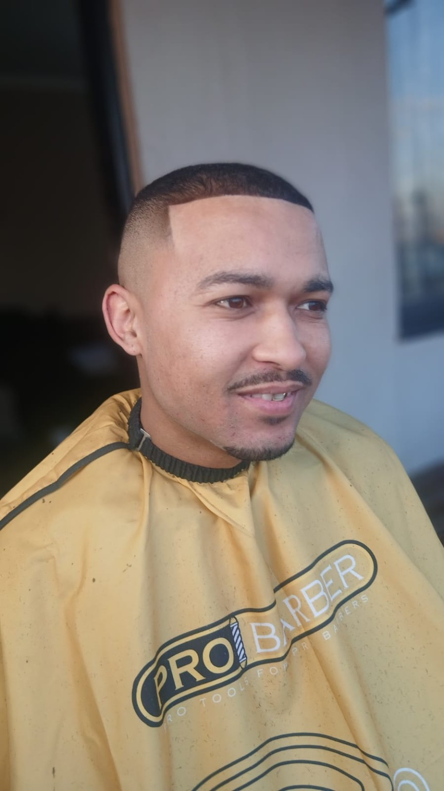

FADE
Clean transitions and sharp finishing tailored to your look.
PALMRIDGE • GAUTENG • SOUTH AFRICA
Precision. Style. Confidence.
Professional barbering with a personal touch — built around clean work, sharp detail and making every client leave feeling right.
Crosses & Clippers is the barbering brand of Davian Benjamin, serving the Palmridge community with a focus on precision, confidence and growth.
THE PERSON BEHIND THE CLIPPERS

A barber. A builder. A local business in the making.
Crosses & Clippers is founded by Davian Benjamin, with the goal of turning barbering into something bigger than a service — a place where people can trust the craft and feel proud of the result.
From everyday cuts to detailed designs, the focus is simple: take the time, get the details right and keep improving.
READ THE STORY ↗WHAT WE DO
Clean transitions and sharp finishing tailored to your look.
Controlled detail around the edges with a clean, natural finish.
Precise hairline and beard detailing for a crisp finish.
Bring your reference, idea or design and make it your own.
Pricing can be confirmed directly with Crosses & Clippers. No unverified prices are displayed.
THE PORTFOLIO

THE STORY BEHIND THE BRAND
Crosses & Clippers is a growing barbering business founded by Davian Benjamin in Gauteng. The brand's story is about putting the work in, building something local and creating a professional experience one client at a time.
This space is intentionally personal: you see the person behind the chair, the work being done and the people who make the business what it is.
“THE GOAL ISN'T JUST TO CUT HAIR.
IT'S TO LEAVE A MARK.”
GET IN TOUCH
Choose a booking option below. For the fastest response, WhatsApp Davian directly.
APPOINTMENT
Send your booking request directly to Davian on WhatsApp. You can also call the business.